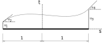
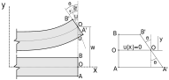

Viga de Timoshenko
Deslocamentos
Com a consideração das deformações por cisalhamento precisamos de um modelo um pouco mais completo de viga. No caso vamos utilizar a teoria de viga de Timoshenko. Voltando a ideia básica de dois nós, os graus de liberdade na viga continuariam os mesmos porém, agora, a rotação não é mais escrita em função da variação dos deslocamentos da viga, conforme veremos adiante.

Isso significa que os graus de liberdade de translação não estão mais acoplados com os de rotação, portanto, seus efeitos precisem ser avaliados separadamente. Essa nova idealização é um problema para as funções de forma. Lembra que precisamos de um polinômio de no mínimo grau 4 para as deflexões da viga? Pois é, como temos os dois graus de liberdade de translação desacoplados dos dois de rotação, precisamos escrever polinômios interpoladores para cada efeitos, em outras palavras, precisamos de funções de forma para interpolar os deslocamentos transversais e outras funções de forma para interpolar as rotações. Como temos somente dois graus de liberdade de cada o máximo polinômio que conseguiríamos escrever para interpolá-los seria de grau 1, ou seja uma reta, o que é muito aquém do que precisamos para conseguir escrever com uma precisão representativa.
Antes de encontrarmos as funções de forma, vou apresentar um conceito novo, onde consideramos um elemento chamado mestre que possui coordenadas unitárias em seus nós. Esse será o elemento onde efetuaremos a integração que resultará na matriz de rigidez, transformando o resultado para o nosso elemento na estrutura utilizando um Jacobiano definido para a transformação.
Elemento Mestre
O elemento mestre é um elemento muito bem comportado no qual o procedimento de integração para o cálculo da matriz de rigidez é simples. Para vigas, ele é definido como possuindo comprimento 2 (pode ser feito de outras formas também), sendo as coordenadas dos nós em -1 e 1. Além disso, esse elemento existe em outro espaço cartesiano, diferente da viga, definido pelos eixos $s$ e $t$.

A transformação de coordenadas entre o sistema xy e o sistema st pode ser feita em função da própria imposição do comprimento unitário na viga, ou seja:
Para cada 1 $s$ temos $L/2$ x. O que resulta no jacobiano de transformação (o Jacobiano define a variação de x em s).
Funções de forma
Diferente do caso da viga de Euler-Bernoulli, em função da rotação não ser mais somente escrita em função da variação dos deslocamentos, na viga de Timoshenko consideramos desacoplados os graus de liberdade de deslocamento e de rotação, ou seja, temos apenas 1 grau de liberdade independente por nó. Por isso, o polinômio que conseguimos descrever para interpolar os deslocamentos nos nós e as rotações acaba se resumindo a uma reta, pois temos apenas 2 graus de liberdade independentes por nó e a equação de uma reta, ou um polinômio de ordem 1, possui 2 coeficientes.
Portanto, o campo de deslocamentos no domínio do elemento e o campo de rotações são interpolados na forma:
Observe que as mesmas funções de interpolação são utilizadas para os deslocamentos e rotações e elas estão definidas no sistema de coordenadas st para o elemento mestre. São definidas para o elemento mestre justamente pelo fato de utilizarmos esse elemento para as integrações necessárias para a obtenção da matriz de rigidez.
Obvio que as funções seriam as mesmas, afinal ambas resultariam em uma equação de reta, que considera uma variação linear dos deslocamentos e rotações no domínio do elemento mestre.
Portanto, as funções de forma, que foram obtidas da mesma forma que foram as funções de forma do elemento de treliça, são:
As equações acima condensadas são escritas como:
Sendo $\textbf{u}_i$ o vetor de deslocamentos com os graus de liberdade ímpares e $\textbf{u}_p$ o vetor de deslocamentos com os graus de liberdade pares:
Quaisquer dessas equações de interpolação dos deslocamentos nodais em sua forma condensada são válidas para qualquer elemento finito, seja o de treliça, de viga, de pórtico, de placa, de casca ou tridimensional, o que muda, obviamente, são as funções de forma na matriz $\textbf{N}$ e os deslocamentos nodais no vetor $\textbf{u}$.
Resolução
Deformações
Os deslocamentos da seção transversal na viga $u(x,y)$ são função do deslocamento $w(x)$ da viga acrescidos de um deslocamento adicional causado pela rotação $\phi$ da seção transversal que representa a deformação por cisalhamento na seção. Observe que esses deslocamentos não são constantes e podem ser considerados com variação linear na seção transversal e que agora estamos tratando dos deslocamentos da viga e não do elemento mestre.

Ou seja, para cada posição $y$ na seção transversal, existe um correspondente valor de $u(x)$, que pode ser escrito como:
Como estamos trabalhando com pequenas deformações, e isso é muito importante, o valor da $tan \theta$ se aproxima do proprio valor de $\theta$. Além disso, esse ângulo de giro, $\theta$, nada mais é que a variação em $x$ da função $w(x)$ que descreve o deslocamento transversal da linha neutra da viga e, portanto:
No entanto, como vamos levar em conta a deformação por cisalhamento $\theta$ agora é uma soma da rotação pela flexão mais a rotação pelo corte.
Sabemos que a deformação, por definição, é a variação do deslocamento axial em relação ao comprimento indeformado do elemento da estrutura, associando isso ao disposto acima, chegamos a:
Ainda não vamos substituir o valor de $\theta$ na equação acima pois nos estamos interpolando o valor de $\theta$ de forma independente de $u$, lembra:
Portanto, ao aplicarmos as premissas de elementos finitos à nossa deformação $\varepsilon$ podemos reescrever as deformações diretamente utilizando as funções de forma para $\theta$ e os deslocamentos nodais.
A matrix das derivadas segundas das funções de forma na equação é chamada de matriz $\textbf{B}$ em elementos finitos, e portanto, a equação pode ser rescrita de uma forma condensada como:
Da mesma forma a equação também é válida para qualquer elemento finito, seja o de treliça, de viga, de pórtico, de placa, de casca ou tridimensional, o que muda é a matriz das derivadas das funções de interpolação, $\textbf{B}$ e os graus de liberdade (ou deslocamentos) $\textbf{u}$.
Como no nosso caso:
Portanto:
Opa!! $N_1(s)$ e $N_2(s)$ são função de $s$ e a derivada é em $x$... e agora?! Lembra da regra da cadeia? Então, como as funções de forma são escritas no sistema st e é necessário se calcular a derivada em relação a x, nós podemos utilizar o jacobiano e a regra da cadeia e fazer o seguinte:
Ou então, utilizando o inverso do Jacobiano:
Então:
Observe que as funções precisam ser contínuas em suas primeiras derivadas para que possam ser utilizadas no elemento de viga de Timoshenko.
Mas não acabou aqui, e a deformação por cortante? Essa deformação é causada pela distorção angular $\gamma_{xy}$ que também precisa ser escrita em função dos deslocamentos nodais com as premissas de elementos finitos. Da teoria da elasticidade sabe-se que essa deformação angular é a variação do deslocamento na direção x em y somada a variação do deslocamento na direção y em x.
Lembrando que $u(x) = -y \theta$, temos:
Como:
Portanto concluimos que:
Justamente nossa definição inicial de que a deformação do cisalhamento ou nossa distorção angular é definida por $\phi$. Mas vamos manter a equação anterior de $\gamma_{xy}$ pois sabemos como discretizar $\theta$ e $\frac{dw}{dx}$ em elementos finitos, que, por sinal, são interpolados pelas funções de forma da seguinte maneira:
Substituindo em $\gamma_{xy}$.
Da mesma forma fazemos as derivadas das funções de forma do espaço st em x usando o Jacobiano e a regra da cadeia e, como são as mesmas, já sabemos exatamente o resultado. Em notação matricial:
A matriz das derivadas e das próprias funções de forma na equação é chamada para a deformação por cisalhamento de matriz $\textbf{B}_c$ em elementos finitos, e portanto, a equação pode ser rescrita de uma forma condensada como:
Equilíbrio
Agora precisamos colocar a nossa viga em equilíbrio, ou seja, todos os efeitos internos devem ser iguais aos efeitos externos. As tensões e deformações (internas, normais e tangenciais) devem ser equivalentes às solicitações externas em seus efeitos, por exemplo trabalho, energia. Lembrando, estamos fazendo uma análise elástica linear estática considerando pequenas deformações, não queremos que nossa barra se movimente como um corpo rígido ou se deforme em excesso, nem que ajam sobre ela cargas que variam no tempo ou que perca energia através de algum processo dissipativo, além disso, desconsideramos os efeitos de amortecimento do material e da sua inércia, por se tratar de uma análise estática.
O equilíbrio das quantidades internas e externas nessas condições pode ser escrito através do Princípio dos Trabalhos Virtuais. Esse princípio, na mecânica dos sólidos, estabelece que o trabalho das forças internas (tensões), $W_i$ deve ser igual ao trabalho das forças externas (no nosso caso f), $W_e$, então:
O trabalho das forças internas, $W_i$, ou seja, o trabalho das tensões é calculando multiplicando essas tensões pelas suas respectivas deformações. No caso da viga de Timoshenko podemos escrever o trabalho das forças internas em duas parcelas, uma relativa ao trabalho das tensões e respectivas deformações normais, representativas do efeito da flexão, $W_f$, e outra relativa ao trabalho das tensões de cisalhamento e respectivas distorções angulares, relativa ao efeito do corte, $W_c$.
O trabalho interno total é a soma das tensões multiplicadas pelas respectivas deformações em toda a barra da treliça, portanto:
O trabalho das forças externas continua sendo calculado pela força multiplicada pelo seu respectivo deslocamento, afinal as condições do carregamento externo são as mesmas, ou seja, como aplicamos uma carga distribuída $g$ em todo o comprimento da viga e essa carga fez com que a viga se deslocasse em $w(x)$ também em todo o seu comprimento, o trabalho externo total é a soma da contribuição de cada pedacinho de $g \times w$ na viga
Sabemos que tanto $\varepsilon$ quanto $w(x)$ estão em equilíbrio, mas não o quanto valem nem como mantém o sistema em equilíbrio. Para testar o equilíbrio desse sistema vamos perturbar ele, partindo de zero deslocamentos e perturbando com deslocamentos imaginários ou virtuais nos nós de $\delta u_1$ e $\delta u_3$ e rotações virtuais de $\delta u_2$ e $\delta u_5$.
Sendo assim, nossa deformação normal virtual se escreve:
A distorção angular virtual:
E para o deslocamento virtual total $w(x)$ vamos manter, por enquanto, em uma forma genérica:
Substituindo esses valores respectivamente nas equações e fazendo o equilíbrio, chegamos à:
Como estamos trabalhando com nosso material utilizando apenas o seu limite elástico, ou seja, o valor das tensões e deformações não podem ser maiores que as limites para esse regime, $\sigma \leq \sigma_{lim}$ e $\varepsilon \leq \varepsilon_{lim}$.
 Relação constitutiva linear proporcional do material, com rigidez elástica E.
Relação constitutiva linear proporcional do material, com rigidez elástica E.
Além disso, como as tensões são proporcionais às deformações, podemos escrever para as tensões normais e tensões cisalhantes:
Observe que no caso da viga, mesmo com as deformações variando linearmente ao longo da seção transversal, $\sigma$, $\varepsilon$, $\tau_{xy}$ e $\gamma_{xy}$ são escalares (ou tensores de ordem zero), pois apenas existe a componente na direção axial da viga e sua respectiva componente na direção paralela a direção do carregamento e a seção transversal. Aliás, $E$ e $G$ também são escalares (ou tensores de ordem zero) por estarmos trabalhando com a resposta mecânica do material em apenas uma direção.
Uma direção? Mas a normal e o cisalhamento não são ortogonais? São sim, mas o efeito do cisalhamento que estamos considerando foi definido como desacoplado da flexão e obtido com um ângulo $\phi$ adicional de giro na seção transversal. Além disso, os parâmetros do material que precisamos encontrar são o modulo de elasticidade e o coeficiente de poisson, pois:
$G = \dfrac{E}{2(1 + \nu)} \qquad \text{e, no caso:} \qquad \nu = -\dfrac{\varepsilon_y}{\varepsilon_x}$
Lembre-se, cisalhamento não existe! Somente aparece pois estamos escrevendo nossa resposta mecânica em função de um referencial fixo, no caso, cartesiano. Então, as tensões principais, que de fato existem fisicamente, são decompostas em parcelas normal e tangencial em cada ponto do material.
Dessa forma, substituindo o valor de $\sigma$ e de $\tau_{xy}$:
Como em nosso problemas estamos discretizando utilizando MEF, substituimos as deformações $\varepsilon$ e $\gamma_{xy}$ pelas respectivas discretizações utilizando as funções de forma e os deslocamentos nodais:
Lembre-se que as transposições são feitas para continuar possível a multiplicação matricial!
Como os deslocamentos $\delta \textbf{u}$ e $\textbf{u}$ não dependem do volume da viga, podemos retirá-los da integral.
Ou ainda:
E, como $\delta \textbf{u}$ são os mesmos em ambos os lados da equação, chegamos ao equilíbrio da nossa viga.
Que, em MEF, chamamos de equilíbrio estático e escrevemos de forma condensada como:
Sendo as integrais no volume conhecidas como matriz de rigidez do elemento, $\textbf{k}$ e $\textbf{f}$ o vetor de forças nodais equivalentes. No caso da viga de Timoshenko nossa matriz de rigidez é composta de duas parcelas:
Uma relativa a rigidez a flexão e outra a rigidez ao cortante.
Matriz de rigidez do elemento de viga de Timoshenko
O vetor de forças nodais equivalentes construído com as funções de forma da viga de Timoshenko não consegue interpolar de forma eficiente o carregamento para a obteção das forças nodais que de fato equivalem a esse carregamento. Isso se deve ao fato da interpolação dos deslocamentos e das rotações ser desacoplada. Como a trabalho interno é definido pela força multiplicada pelo seu respectivo deslocamento, no caso da viga de Timoshenko, obteríamos apenas forças nodais nos graus de liberdade de translação.
Matematicamente, como:
Sendo as funções de forma:
E a transformação de coordenadas $s = \dfrac{2}{L}x$, $\textbf{N}$ resulta em:
E ainda, como:
Que resulta após a aplicação da discretização de MEF em:
Sendo o $\textbf{N}$ na equação acima relativo a interpolação dos deslocamentos $w(x)$, fica claro observar que nesse caso a interpolação e a resolução da integral resultariam apenas em forças nodais equivalentes relativas aos graus de liberdade de deslocamento.
Por isso vamos utilizar o vetor de forças nodais equivalentes definido para a carga distribuída utilizando as funções de forma de Hermite, da mesma forma que foi feito para a viga de Euler-Bernoulli, ou seja:
No caso da integral no volume, conhecida como matriz de rigidez do elemento, podemos abrir a integral em uma integral na área e outra no comprimento. No entanto, lembra que a matriz $\textbf{B}$ possui um $y$ multiplicando as derivadas segundas das funções de interpolação? Isso significa que as deformações são função tanto de $x$ quando de $y$ da seção transversal (não confunda o $y$ da seção com o $y$ do sistema de coordenadas). Isolando o $y$ de $\textbf{B}$, podemos escrever:
E ao resolver a integral na área chegamos a um velho conhecido nosso, o segundo momento de área ou momento de inércia.
Chamando a primeira integral dentro dos colchetes de $\textbf{k}_f$ e a segunda de $\textbf{k}_c$ e substituindo os valores de $\textbf{B}_x$ e $\textbf{B}_c$, realizando as multiplicações matriciais e resolvendo a integral:
E:
E o equilíbrio sendo dado por:
E agora?! Agora é hora de voltar à viga da ponte preta e resolvê-la na mão na aplicação na mão